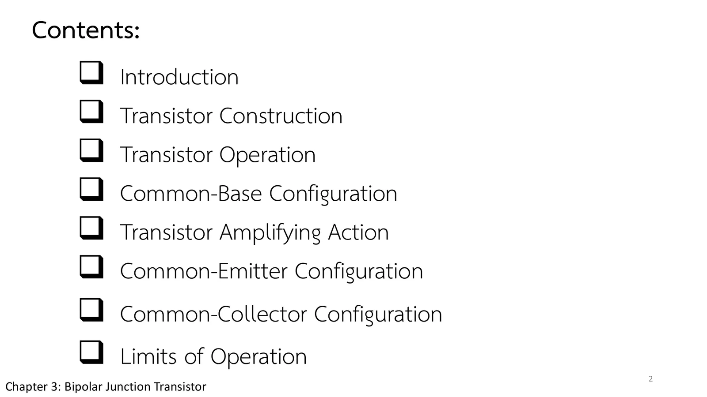
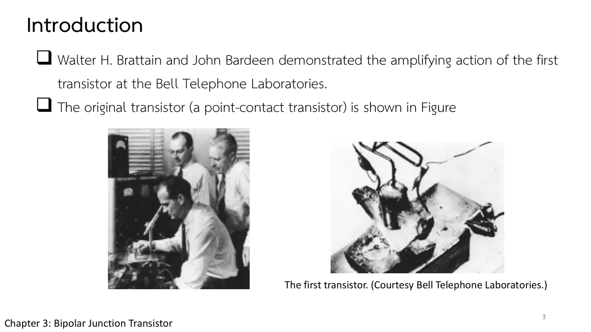
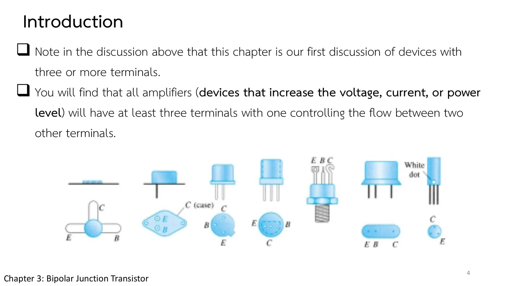

โครงสร้างและการทำงานของทรานซิสเตอร์ Transistor construction and operation
Transistor construction and operation Three layers, two junctions, and \(I_E = I_C + I_B\)
หลอดสุญญากาศต้องอุ่นเครื่องก่อนใช้งาน ทั้งใหญ่ หนัก เปราะ และกินไฟ จนกระทั่งวันที่ 23 ธันวาคม 1947 ชิ้นส่วนสารกึ่งตัวนำชิ้นเล็ก ๆ ก็ขยายสัญญาณได้เช่นกัน ทรานซิสเตอร์แบบรอยต่อคู่ (bipolar junction transistor, BJT) มีปริศนาข้อหนึ่งที่หน้านี้จะไข: รอยต่อคอลเล็กเตอร์–เบสของมันถูกไบแอสกลับ ซึ่งในบทที่ 1 แปลว่ากั้นกระแส แต่กระแสเกือบทั้งหมดของทรานซิสเตอร์กลับไหลผ่านรอยต่อนี้ หน้านี้ดูโครงสร้างสามชั้นแบบ npn และ pnp ภาพเคลื่อนไหวของพาหะในทรานซิสเตอร์ที่ต่อหรือปลดแหล่งจ่ายแต่ละตัวได้ (ส่วน A) โจทย์กฎกระแสของทรานซิสเตอร์ และแบบฝึกเพิ่ม (สไลด์บทที่ 3 หน้า 2–7 · Boylestad หัวข้อ 3.1–3.3)
Vacuum tubes needed warming up, and they were big, heavy, fragile and power-hungry, until on 23 December 1947 a small piece of semiconductor amplified a signal as well. The bipolar junction transistor (BJT) holds a puzzle that this page solves: its collector–base junction is reverse-biased, which in chapter 1 meant blocking current, yet almost all of the transistor's current flows through that junction. This page looks at the three-layer npn and pnp structure, animates the carriers inside a transistor whose two supplies you can connect or remove (section A), and ends with a problem on the transistor's current law and more practice (chapter 3 slides, pp. 2–7; Boylestad sections 3.1–3.3).
ประเด็นสำคัญของหน้านี้
- ทรานซิสเตอร์ตัวแรก: Brattain และ Bardeen (ร่วมกับ Shockley) สาธิตการขยายของทรานซิสเตอร์แบบจุดสัมผัส (point-contact) ที่ Bell Telephone Laboratories เมื่อ 23 ธันวาคม 1947 ข้อดีเหนือหลอดสุญญากาศคือเล็ก เบา ทนทาน ประสิทธิภาพสูง ไม่ต้องอุ่นเครื่อง และใช้แรงดันต่ำกว่า (สไลด์หน้า 3)
- อุปกรณ์สามขา: วงจรขยายทุกชนิด (เพิ่มแรงดัน กระแส หรือกำลัง) มีอย่างน้อยสามขา โดยขาหนึ่งควบคุมการไหลระหว่างอีกสองขา (สไลด์หน้า 4)
- โครงสร้าง: สามชั้นแบบ npn หรือ pnp อิมิตเตอร์ (emitter, E) โดปมาก เบส (base, B) โดปน้อยและบางมาก (ความกว้างรวมต่อเบสราว 150 : 1) คอลเล็กเตอร์ (collector, C) โดปน้อย คำว่าไบโพลาร์ (bipolar) หมายถึงทั้งโฮลและอิเล็กตรอนมีส่วนในการนำกระแส (สไลด์หน้า 5)
- การทำงาน: รอยต่อหนึ่งไบแอสตรง อีกรอยต่อไบแอสกลับ (สไลด์หน้า 6) พาหะข้างมากจากอิมิตเตอร์แพร่เข้าเบสที่บาง ส่วนน้อยรวมตัวในเบสเป็นกระแสเบสระดับไมโครแอมแปร์ ส่วนใหญ่ข้ามรอยต่อที่ไบแอสกลับเข้าคอลเล็กเตอร์ (สไลด์หน้า 7)
- กระแส: มองทรานซิสเตอร์เป็นโหนดเดียว \(I_E = I_C + I_B\) (สมการ 3.1) กระแสอิมิตเตอร์มากที่สุด กระแสเบสน้อยที่สุด และ \(I_C\) มีส่วนของพาหะข้างน้อย (กระแสรั่วไหล \(I_{CO}\)) ซึ่งไวต่ออุณหภูมิ (สมการ 3.2)
Key points of this page
- The first transistor: Brattain and Bardeen (with Shockley) demonstrated the amplifying action of a point-contact transistor at Bell Telephone Laboratories on 23 December 1947. Its advantages over the vacuum tube: smaller, lighter, rugged, more efficient, no warm-up, lower operating voltages (slide p. 3).
- Three terminals: every amplifier (raising voltage, current or power) has at least three terminals, one controlling the flow between the other two (slide p. 4).
- Construction: three layers, npn or pnp. The emitter (E) is heavily doped; the base (B) lightly doped and very thin (total width to base about 150 : 1); the collector (C) lightly doped. Bipolar means both holes and electrons take part in conduction (slide p. 5).
- Operation: one junction forward-biased, the other reverse-biased (slide p. 6). Majority carriers from the emitter diffuse into the thin base; a few recombine there (a base current of microamperes), most cross the reverse-biased junction into the collector (slide p. 7).
- Currents: the transistor as one node gives \(I_E = I_C + I_B\) (Eq. 3.1). The emitter current is the largest, the base current the smallest, and \(I_C\) includes a minority-carrier part, the leakage \(I_{CO}\), which is temperature-sensitive (Eq. 3.2).
ทรานซิสเตอร์ตัวแรก และเส้นทางของบทที่ 3
The first transistor, and the road through chapter 3
สไลด์หน้า 3 พากลับไปที่ Bell Telephone Laboratories ซึ่ง Walter H. Brattain และ John Bardeen สาธิตการขยายสัญญาณของทรานซิสเตอร์ตัวแรกได้สำเร็จ ตัวต้นฉบับเป็นทรานซิสเตอร์แบบจุดสัมผัส (point-contact) เมื่อเทียบกับหลอดสุญญากาศในยุคนั้น มันเล็กกว่า เบากว่า ทนทานกว่า ประสิทธิภาพสูงกว่า ไม่ต้องอุ่นเครื่อง และใช้แรงดันต่ำกว่า
สไลด์หน้า 2 วางเส้นทางของบทนี้: โครงสร้างและการทำงานของทรานซิสเตอร์ วงจรสามแบบที่ตั้งชื่อตามขาที่ใช้ร่วมกัน คือเบสร่วม อิมิตเตอร์ร่วม และคอลเล็กเตอร์ร่วม แล้วปิดท้ายด้วยขีดจำกัดการทำงาน หน้านี้คือช่วงแรกของเส้นทาง: ข้างในทรานซิสเตอร์มีอะไร และกระแสไหลอย่างไร
Slide p. 3 goes back to Bell Telephone Laboratories, where Walter H. Brattain and John Bardeen demonstrated the amplifying action of the first transistor; the original was a point-contact transistor. Next to the vacuum tubes of the day it was smaller and lighter, more rugged and more efficient, needed no warm-up and ran on lower voltages.
Slide p. 2 maps the chapter: the construction and operation of the transistor, three configurations named after the terminal they share (common base, common emitter and common collector), and finally the limits of operation. This page is the first stretch of that road: what is inside a transistor, and how the current flows.


↓ ต่อไป: สามขา สามชั้น
↓ Next: three terminals, three layers
ขาหนึ่งคุมกระแสของอีกสองขา
One terminal controls the current between the other two
ทรานซิสเตอร์คืออุปกรณ์สามขาตัวแรกของรายวิชานี้ สไลด์หน้า 4 ให้เหตุผลว่าทำไมต้องสามขา: วงจรขยายทุกชนิด ไม่ว่าจะเพิ่มแรงดัน กระแส หรือกำลัง ต้องมีอย่างน้อยสามขา โดยขาหนึ่งควบคุมการไหลระหว่างอีกสองขา ตัวถังในภาพหน้าตาต่างกัน แต่ทุกตัวมีขาอิมิตเตอร์ (emitter, E) เบส (base, B) และคอลเล็กเตอร์ (collector, C)
ข้างในคือสารกึ่งตัวนำสามชั้น (สไลด์หน้า 5): ชนิด n สองชั้นประกบชนิด p หนึ่งชั้น (npn) หรือชนิด p สองชั้นประกบชนิด n (pnp) อิมิตเตอร์โดปมาก เบสโดปน้อย คอลเล็กเตอร์โดปน้อย และชั้นนอกทั้งสองกว้างกว่าชั้นกลางมาก (ความกว้างรวมต่อความกว้างของเบสราว 150 : 1) จำสองข้อนี้ไว้: เบสบางและโดปน้อย ภาพจำลองถัดไปจะแสดงว่าทำไมมันสำคัญ
The transistor is the first three-terminal device of the course. Slide p. 4 explains why three: every amplifier, whether it raises voltage, current or power, has at least three terminals, one controlling the flow between the other two. The packages pictured look different, but each has an emitter (E), a base (B) and a collector (C) lead.
Inside are three layers of semiconductor (slide p. 5): two n-type layers around a p-type one (npn), or two p-type layers around an n-type one (pnp). The emitter is heavily doped, the base lightly doped, the collector lightly doped, and the outer layers are far wider than the middle one (total width to base width about 150 : 1). Remember those two facts, a thin base and a lightly doped one: the simulation below shows why they matter.

![Chapter 3 slide 5, Transistor Construction: the transistor is a three-layer semiconductor device consisting of either two n- and one p-type layers of material or two p- and one n-type layers of material. The emitter layer is heavily doped, the base lightly doped, and the collector only lightly doped; the outer layers have widths much greater than the sandwiched p- or n-type material. Figures: an n+ p n block (emitter, base, collector) with I_E, I_B and I_C and its npn symbol; a p+ n p block with its pnp symbol.](slides/ch3/p05.webp)
↓ ส่วน A: ต่อหรือปลดแหล่งจ่ายทีละตัว แล้วดูว่าพาหะจากอิมิตเตอร์ไปจบที่ขาไหน
↓ Section A: connect or remove each supply and see which terminal the carriers from the emitter end up at
พาหะในทรานซิสเตอร์ที่ไบแอสแล้ว
The carriers of a biased transistor
สไลด์หน้า 6 แยกดูทีละรอยต่อ: รอยต่ออิมิตเตอร์–เบสที่ไบแอสตรงก็คือไดโอดไบแอสตรงของบทที่ 1 บริเวณปลอดพาหะแคบ พาหะข้างมากไหลข้ามจำนวนมาก ส่วนรอยต่อคอลเล็กเตอร์–เบสที่ไบแอสกลับมีบริเวณปลอดพาหะกว้าง เหลือเพียงพาหะข้างน้อยที่ข้ามได้ สไลด์หน้า 7 ต่อทั้งสองพร้อมกัน แล้วเกิดสิ่งที่บทที่ 1 ไม่เคยบอก: พาหะข้างมากส่วนใหญ่ที่ฉีดเข้าเบสแพร่ทะลุเบสบาง ๆ ข้ามรอยต่อที่ไบแอสกลับไปถึงคอลเล็กเตอร์ เหลือเป็นกระแสเบสเพียงเล็กน้อย
Slide p. 6 looks at one junction at a time: the forward-biased emitter–base junction is just the forward-biased diode of chapter 1, its depletion region narrow and its majority carriers crossing in large numbers, while the reverse-biased collector–base junction has a wide depletion region that only minority carriers cross. Slide p. 7 connects both, and something chapter 1 never mentioned happens: most of the majority carriers injected into the base diffuse through the thin base and across the reverse-biased junction into the collector, leaving only a small base current.
![Chapter 3 slide 6, Transistor Operation: in the figure the pnp transistor has been redrawn without the base-to-collector bias; note the similarities between this situation and that of the forward-biased diode in Chapter 1. The depletion region has been reduced in width due to the applied bias, resulting in a heavy flow of majority carriers from the p- to the n-type material. Figures: the emitter–base junction with V_EE, a narrow depletion region and many majority carriers; the collector–base junction with V_CC, a wide depletion region and only minority carriers. Quote: one p-n junction of a transistor is reverse biased, while the other is forward biased.](slides/ch3/p06.webp)
![Chapter 3 slide 7, Transistor Operation: in the figure both biasing potentials have been applied to a pnp transistor, with the resulting majority- and minority-carrier flow indicated. A large number of majority carriers will diffuse across the forward-biased p-n junction into the n-type material; the larger number of these majority carriers will diffuse across the reverse-biased junction into the p-type material connected to the collector terminal. Figure: a p-n-p bar with both depletion regions, a wide arrow of majority carriers from emitter to collector, I_E in, I_C out, a small I_B out of the base, and the supplies V_EE and V_CC below.](slides/ch3/p07.webp)
ภาพจำลองคือทรานซิสเตอร์ตามรูป 3.5: อิมิตเตอร์ทางซ้าย เบสบาง ๆ ตรงกลาง คอลเล็กเตอร์ทางขวา \(V_{EE}\) ไบแอสตรงรอยต่ออิมิตเตอร์–เบส และ \(V_{CC}\) ไบแอสกลับรอยต่อคอลเล็กเตอร์–เบส ต่อหรือปลดแหล่งจ่ายทีละตัวแล้วดูความกว้างของบริเวณปลอดพาหะ (แถบสีเหลือง) และพาหะที่ข้ามรอยต่อ พาหะข้างน้อยมีวงล้อม ตัวเลขกระแสเป็นตัวอย่าง (α = 0.99 และ \(I_{CO}\) ขยายให้เห็นได้)
The simulation is the transistor of Fig. 3.5: emitter on the left, a thin base in the middle, collector on the right; \(V_{EE}\) forward-biases the emitter–base junction and \(V_{CC}\) reverse-biases the collector–base junction. Connect or remove each supply and watch the width of the depletion regions (yellow strips) and the carriers crossing. Minority carriers are ringed. The currents are illustrative (α = 0.99, with \(I_{CO}\) enlarged so that it shows).
กฎกระแสของทรานซิสเตอร์
The transistor's current law
กระแสอิมิตเตอร์ของทรานซิสเตอร์ตัวหนึ่งเท่ากับ 8 mA และ \(I_B\) เท่ากับ 1/100 ของ \(I_C\) จงหา \(I_C\) และ \(I_B\)
The emitter current of a transistor is 8 mA and \(I_B\) is 1/100 of \(I_C\). Determine \(I_C\) and \(I_B\).
ภาพจำลองเป็นทรานซิสเตอร์ npn ในวงจรเบสร่วม (หน้า 3.2): แหล่งจ่ายกระแส 8 mA ดึงกระแสออกจากอิมิตเตอร์ และแหล่งจ่าย 5 V ไบแอสกลับรอยต่อคอลเล็กเตอร์–เบส ลองตอบก่อน
The simulation is an npn transistor in a common-base circuit (page 3.2): an 8 mA current source draws the emitter current, and a 5 V supply reverse-biases the collector–base junction. Try it first.
ฝึกเพิ่ม
More practice
ลองทำดู 1 — ทีละรอยต่อ
- ส่วน A ปลด \(V_{CC}\) ออก เหลือ \(V_{EE}\): รอยต่ออิมิตเตอร์–เบสเป็นไดโอดไบแอสตรง (รูป 3.4a) บริเวณปลอดพาหะแคบ พาหะข้างมากไหลข้ามจำนวนมาก และออกทางขาเบสทั้งหมด \(I_B = I_E\)
- ต่อ \(V_{CC}\) กลับเข้าไป ปลด \(V_{EE}\) ออก: รอยต่อคอลเล็กเตอร์–เบสเป็นไดโอดไบแอสกลับ (รูป 3.4b) บริเวณปลอดพาหะกว้าง มีเพียงพาหะข้างน้อยข้ามรอยต่อ คือกระแสรั่วไหล \(I_{CO}\)
- ต่อทั้งสองตัว: พาหะที่ฉีดเข้าเบสเกือบทั้งหมดไปถึงคอลเล็กเตอร์ \(I_B\) เหลือเพียงส่วนน้อย นี่คือเหตุที่เบสต้องบางและโดปน้อย
ลองทำดู 2 — npn
- สลับเป็น npn: อิเล็กตรอนเป็นพาหะข้างมากของอิมิตเตอร์และคอลเล็กเตอร์ โฮลเป็นของเบส ขั้วแหล่งจ่ายและทิศของกระแสทุกตัวกลับ แต่หลักการเหมือนเดิมทุกอย่าง
- ลองจำทิศของลูกศรในสัญลักษณ์ (หน้า 3.2): npn "not pointing in" pnp "pointing in"
Try this 1 — one junction at a time
- In section A remove \(V_{CC}\), leaving \(V_{EE}\): the emitter–base junction is a forward-biased diode (Fig. 3.4a), its depletion region narrow, many majority carriers cross, and all of them leave by the base: \(I_B = I_E\).
- Connect \(V_{CC}\) again and remove \(V_{EE}\): the collector–base junction is a reverse-biased diode (Fig. 3.4b), its depletion region wide, and only minority carriers cross: the leakage \(I_{CO}\).
- Connect both: nearly all the carriers injected into the base reach the collector and only a small \(I_B\) remains. This is why the base must be thin and lightly doped.
Try this 2 — npn
- Switch to npn: electrons are the majority carriers of the emitter and the collector, holes of the base; every supply polarity and current direction turns round, but the principle is exactly the same.
- Remember the arrow of the symbol (page 3.2): npn "not pointing in", pnp "pointing in".